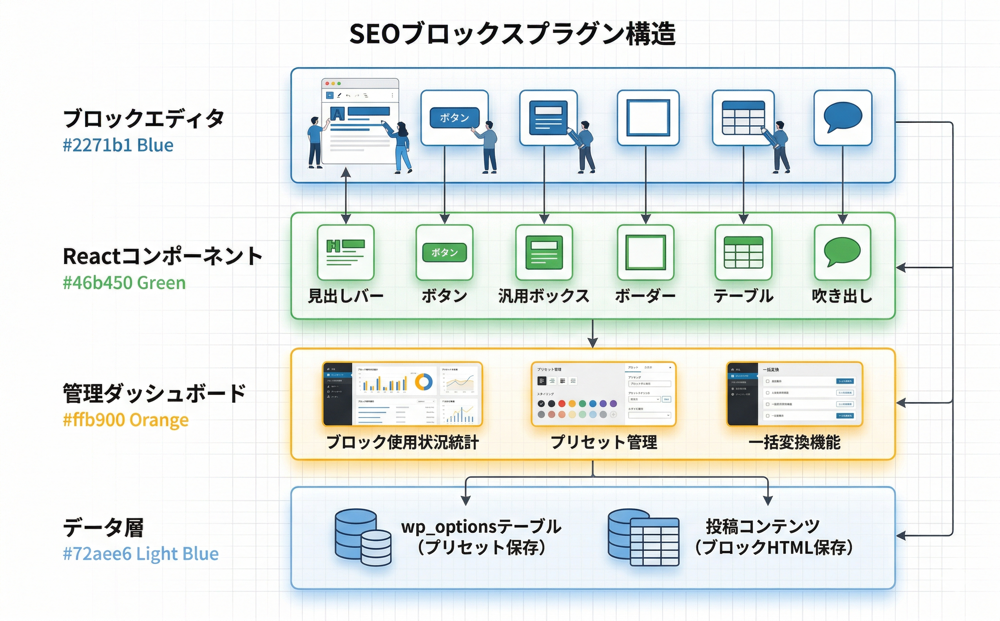

トラブルシューティング
よくある問題とその解決方法をまとめています。
ブロックが挿入メニューに表示されない
原因: プラグインが有効化されていない、またはクラシックエディタを使用している
1
WordPress管理画面の「プラグイン」ページで、Kashiwazaki SEO Blocksが有効化されていることを確認
2
ブロックエディタ（Gutenberg）を使用していることを確認。クラシックエディタでは使用不可
3
ブロック挿入メニューで「Kashiwazaki」と検索してブロックが表示されるか確認
このプラグインはブロックエディタ（Gutenberg）専用です。クラシックエディタでは使用できません。
ブロックのスタイルが反映されない
原因: テーマのCSSがブロックのスタイルを上書きしている
1
ブラウザの開発者ツールでCSSの競合がないか確認
2
デフォルトテーマなど別のテーマに切り替えて、スタイルが正しく反映されるか確認
3
ブラウザキャッシュおよびキャッシュプラグインのキャッシュをクリア
プラグインのCSSはセマンティックなクラス名（ksb-で始まる）を使用しています。テーマ側でこれらのクラスを上書きしている場合は調整してください。
一括変換が機能しない
原因: プリセットが保存されていない、または対象投稿が選択されていない
1
ダッシュボードでプリセットが正しく保存されていることを確認
2
一括変換の対象となる投稿が選択されていることを確認
3
対象投稿内に変換元のプリセットが使用されていることを確認
一括変換は投稿コンテンツを直接変更する不可逆操作です。必ずバックアップを取ってから実行してください。
吹き出しのアバター画像が表示されない
原因: メディアライブラリの画像が削除された、またはURLが変更された
1
メディアライブラリから画像を再選択
2
メディアライブラリに画像が存在することを確認
3
投稿を再保存して変更を反映
動作要件
| 項目 | 要件 |
|---|---|
| WordPress | 6.0以上（ブロックエディタ必須） |
| PHP | 7.4以上 |
| エディタ | ブロックエディタ（Gutenberg）のみ対応 |
| 対応ブラウザ | モダンブラウザ（Chrome, Firefox, Safari, Edge） |
技術仕様
- ブロック登録:
register_block_type()（6ブロック） - カスタムカテゴリ: "Kashiwazaki SEO Blocks"
- データ保存: wp_options（プリセット3種）、投稿コンテンツ（ブロックHTML）
- AJAX: 9ハンドラー（プリセット保存/取得/一括変換 × 3ブロック）
- 依存: React JSX Runtime, WP Block Editor, WP Blocks, WP Components, WP Element, WP i18n
- Cronイベント: なし
- メール送信: なし
- 外部通信: なし
プラグインのアーキテクチャ
